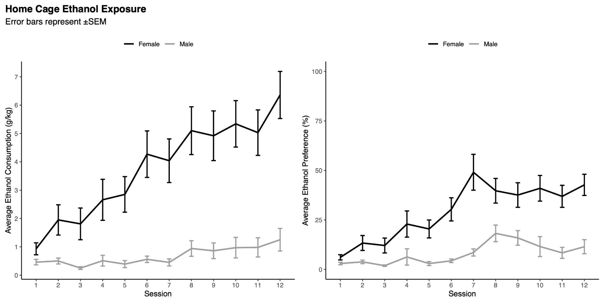
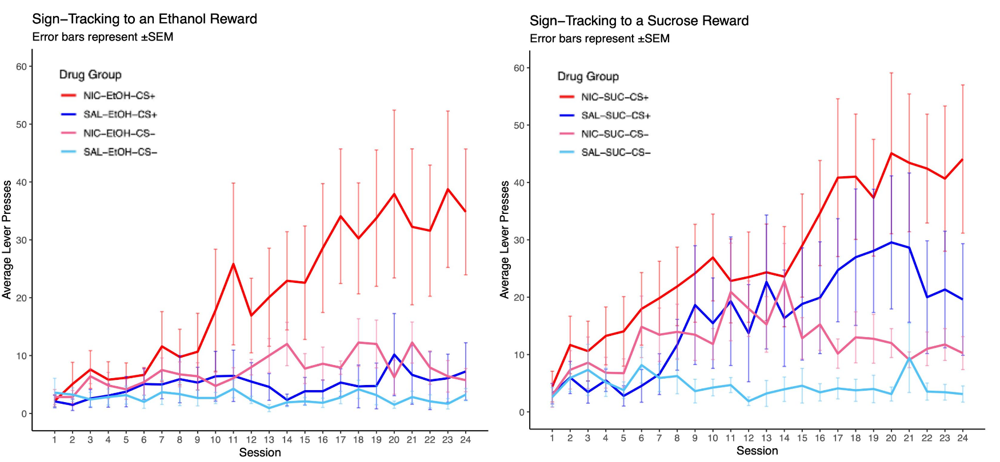
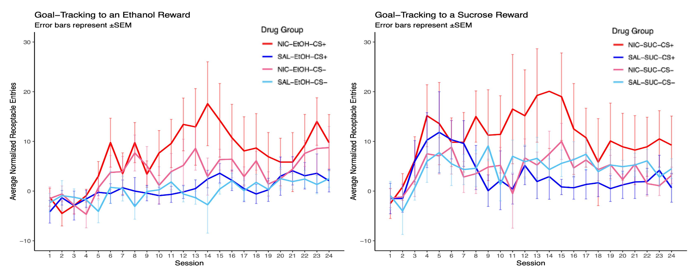

Nicotine Enhances Pavlovian Conditioned Approach Behavior in Rats
Alcohol and nicotine are among the most commonly co-used substances, with 80-90% of individuals with alcohol use disorders also reporting nicotine use — and each drug promoting greater use of the other. One possible explanation for this relationship is that nicotine enhances the motivational pull of cues associated with other rewards, a phenomenon studied through Pavlovian conditioning. In this paradigm, animals learn to associate a neutral stimulus with a reward, and their responses fall into two categories: sign-tracking (approaching the cue itself) and goal-tracking (approaching the reward location). Sign-trackers are of particular interest because they show greater addiction-related traits, including impulsive behavior and drug-seeking. This study asked how nicotine exposure affects these conditioned responses in male and female rats when the reward is either alcohol or sucrose.

This was a collaborative project across a group of eight researchers. I spent one semester in the lab working directly with live rats — each researcher was responsible for a subset of the animals, and I was directly responsible for six of the 48 Long-Evans rats across two experimental phases. This included hands-on animal handling, running conditioning sessions, administering subcutaneous nicotine or saline injections, and recording all behavioral data by hand across roughly 30 sessions per animal. The following semester I took on the data side — ingesting approximately 48 rats × 30 sessions × 10 features worth of hand-recorded observations into a structured format suitable for statistical analysis, and building all of the results visualizations from the cleaned dataset.

The study ran in two phases. In Phase 1, rats were given intermittent home cage access to 15% ethanol versus water over 12 sessions, establishing baseline drinking behavior. In Phase 2, rats received a subcutaneous injection of nicotine or saline 10 minutes before each of 24 Pavlovian conditioning sessions, during which a lever (CS+) was paired with either 15% ethanol or 21.3% sucrose reward. Sign-tracking and goal-tracking responses to both the CS+ and CS- were recorded across sessions. Mixed repeated measures ANOVAs were used to evaluate the effects of session, sex, drug group, and reward type on conditioned responses.

Nicotine significantly enhanced learning of the discrimination between the reward-paired cue (CS+) and the control cue (CS-) in both sign-tracking and goal-tracking responses. Rats conditioned with a sucrose reward showed stronger conditioned approach behavior than those conditioned with ethanol, suggesting sucrose is a more motivationally potent reward in this population. Female rats consumed more ethanol and showed greater ethanol preference than males during home cage exposure, though this sex difference did not carry over into differences in Pavlovian conditioned responding. The results point to nicotinic acetylcholine receptors as a promising target for understanding and potentially treating substance use disorders, given their apparent role in reward-related learning and cue reactivity.